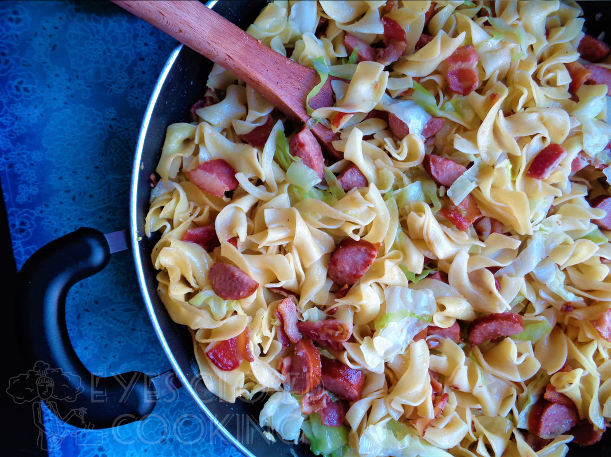

Haluski Recipe

Description
One of my favorite dishes growing up as a kid in Ohio, this simple Eastern European dish is sure to be a favorite of any crowd you cook for.
Ingredients
- 12 ounces dry No Yolks egg noodles
- 1 pound kielbasa
- 1 head of green cabbage
- 2 cups of onion, diced
- Salt
- Pepper
- Garlic powder